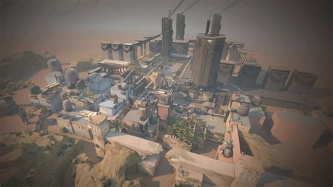
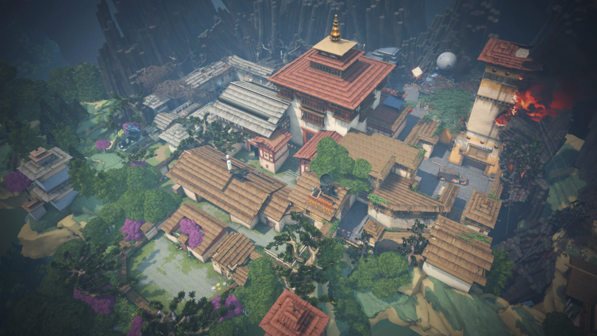
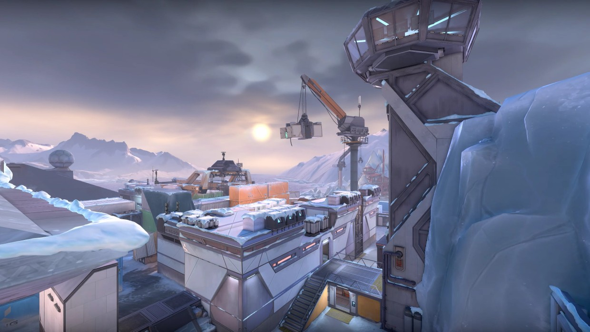

Bind
Two sites. No middle. Gotta pick left or right. What’s it going to be then? Both offer direct paths for attackers and a pair of one-way teleporters make it easier to flank.
Two sites. No middle. Gotta pick left or right. What’s it going to be then? Both offer direct paths for attackers and a pair of one-way teleporters make it easier to flank.

Ascent
An open playground for small wars of position and attrition divide two sites on Ascent. Each site can be fortified by irreversible bomb doors; once they’re down, you’ll have to destroy them or find another way. Yield as little territory as possible.
An open playground for small wars of position and attrition divide two sites on Ascent. Each site can be fortified by irreversible bomb doors; once they’re down, you’ll have to destroy them or find another way. Yield as little territory as possible.

Breeze
Take in the sights of historic ruins or seaside caves on this tropical paradise. But bring some cover. You'll need them for the wide open spaces and long range engagements. Watch your flanks and this will be a Breeze.
Take in the sights of historic ruins or seaside caves on this tropical paradise. But bring some cover. You'll need them for the wide open spaces and long range engagements. Watch your flanks and this will be a Breeze.

Haven
Beneath a forgotten monastery, a clamour emerges from rival Agents clashing to control three sites. There’s more territory to control, but defenders can use the extra real estate for aggressive pushes.
Beneath a forgotten monastery, a clamour emerges from rival Agents clashing to control three sites. There’s more territory to control, but defenders can use the extra real estate for aggressive pushes.

Icebox
Your next battleground is a secret Kingdom excavation site overtaken by the arctic. The two plant sites protected by snow and metal require some horizontal finesse. Take advantage of the ziplines and they’ll never see you coming.
Your next battleground is a secret Kingdom excavation site overtaken by the arctic. The two plant sites protected by snow and metal require some horizontal finesse. Take advantage of the ziplines and they’ll never see you coming.

Split
If you want to go far, you’ll have to go up. A pair of sites split by an elevated center allows for rapid movement using two rope ascenders. Each site is built with a looming tower vital for control. Remember to watch above before it all blows sky-high.
If you want to go far, you’ll have to go up. A pair of sites split by an elevated center allows for rapid movement using two rope ascenders. Each site is built with a looming tower vital for control. Remember to watch above before it all blows sky-high.